1 Maven Tools 3×3
Ctrl+Shift chords for a Maven/IDE set-up (B, U, I, Q, E and a Shift+Redo tile). The middle row is deliberately empty; empty tiles are drawn dim and send nothing.
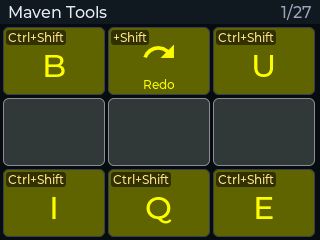
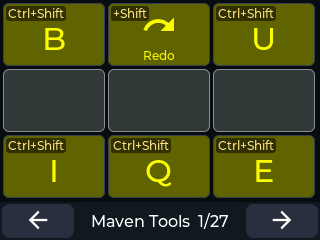


 Nachtgespenst
NachtgespenstA night ghost for your keyboard: a Bluetooth LE and USB macro pad built on the M5Stack Core2 and CoreS3. Tap a tile on the touchscreen and the matching key, chord or media command arrives on your computer.
Source on GitHubChangelogSet it up

Nachtgespenst turns an M5Stack touchscreen into a programmable HID device. The screen shows one grid of tiles per layer; tapping a tile sends the matching HID report to the host computer. There are 26 layers and a Locks page, shown on both devices.
kp_A, cp_MUTE, lcs(...), lhyp(...)).| Core2 | CoreS3 | |
|---|---|---|
| PlatformIO environment | core2 | cores3 |
| Host transports | BLE | BLE and USB (TinyUSB) |
| Paging | Three capacitive buttons under the screen: A previous, B Locks page, C next | On-screen bottom bar: previous, Locks (tap the title), next |
| LED bar | M5GO base, ten LEDs on GPIO25 | M5GO base, ten LEDs on GPIO5 (found with the camera test below) |
| Flashing | CP2104 serial bridge, resets automatically | Native USB; needs a 1200-baud touch to enter the ROM bootloader |
| Screen | 320 × 240, touch | |
The same keymap runs on both boards, so each card below shows the page as the Core2 and the CoreS3 draw it, in the current LVGL interface and in the classic interface described further down. All screenshots were captured from the devices themselves over the serial SHOT command.
Ctrl+Shift chords for a Maven/IDE set-up (B, U, I, Q, E and a Shift+Redo tile). The middle row is deliberately empty; empty tiles are drawn dim and send nothing.


Hyper-key chords (Ctrl+Shift+Alt+Win) with W, X, P, O, T, N, B, E, Y and L. On Windows these open the Microsoft 365 apps; the tiles show app icons (Word, Excel, PowerPoint, Outlook, Teams, OneNote, browser, Explorer, lock).
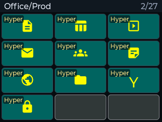
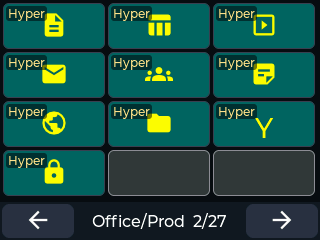
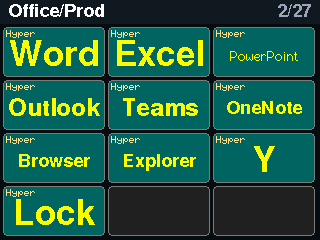
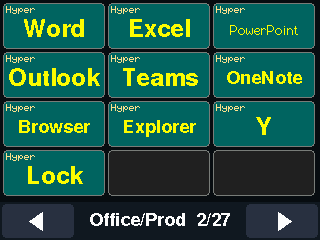
Editing and navigation: Insert, Delete, Home, End, Page Up and Down, the four arrows, plus copy, paste, cut, undo and select-all. Tiles tagged +Shift send the shifted variant.
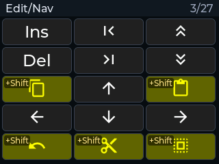
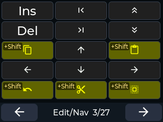


System keys: Esc, Menu, Print Screen, Pause, Scroll Lock and Num Lock, the Ctrl+Z/X/C/V clipboard set and Ctrl+F. The power key is drawn but not sent yet (the System report is still on the to-do list).
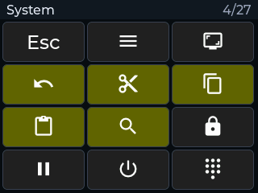
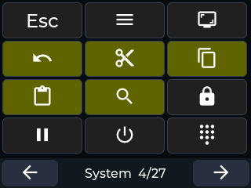


The plain function keys F1 to F10, with Esc and Enter in the bottom row. The numeric layout mirrors a keypad: 7-8-9 on top, 1-2-3 at the bottom.
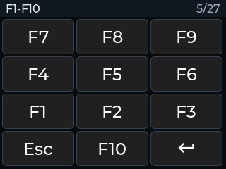
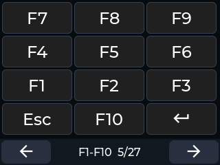
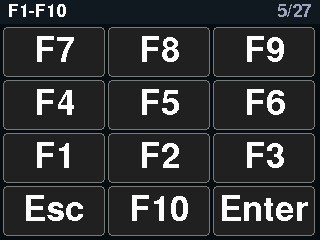
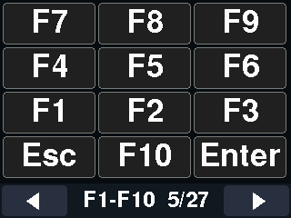
F1 to F10 with the Meh modifier (Ctrl+Shift+Alt) so they can be bound to global shortcuts without clashing with applications.
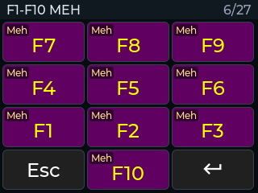
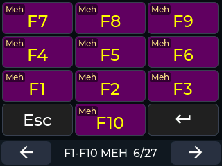


F1 to F10 with the Hyper modifier (Ctrl+Shift+Alt+Win), the other family of global-shortcut chords.
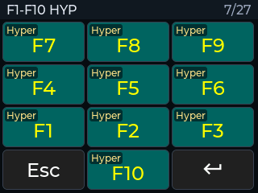
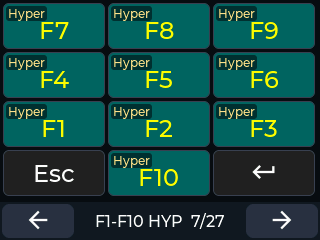


Function keys F11 to F20, laid out like the F1 to F10 page.
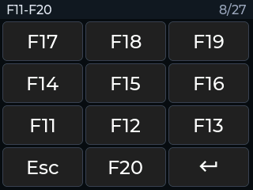
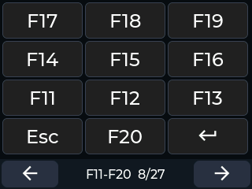


F11 to F20 with the Meh modifier.
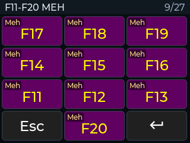
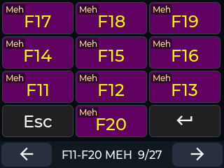
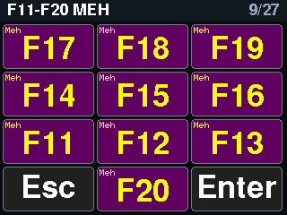
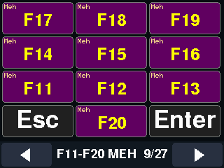
F11 to F20 with the Hyper modifier.
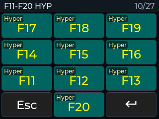
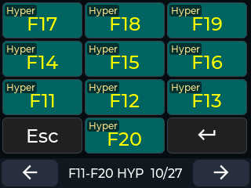
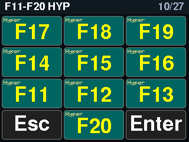

The rarely used F21 to F24 as four large tiles.
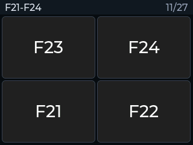
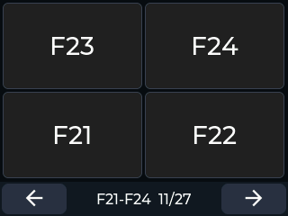


F21 to F24 with Meh.
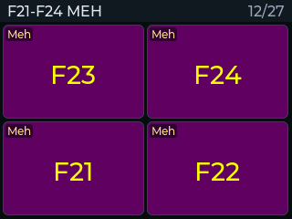
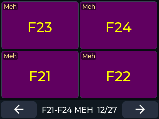

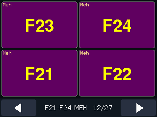
F21 to F24 with Hyper.
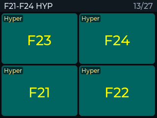
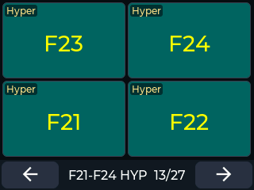

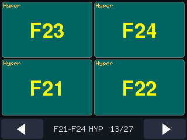
A symbol pad: digits 0 to 9, punctuation and the shifted symbols (! @ # $ and brackets), plus Esc, Tab, Backspace and Enter.
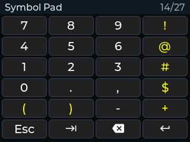
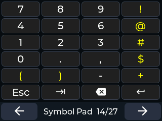
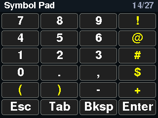

A complete numeric keypad: Num Lock, the four operators, digits, decimal point and keypad Enter, with Esc, Tab and Backspace underneath.
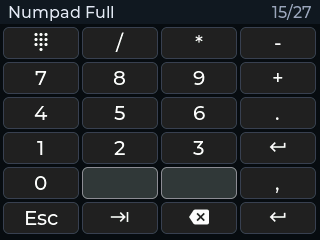
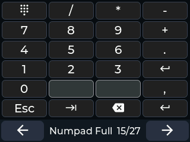


The International 1 to 9 keys that Japanese and some European layouts use. Their generated names are long, so the tiles are truncated; this is a known cosmetic issue.
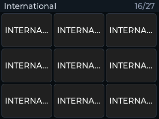
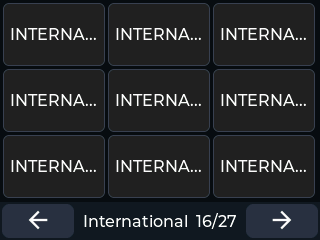
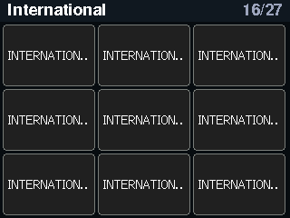

Language and input keys: LANG1 to LANG5, Execute, Menu, the three lock keys and Enter.
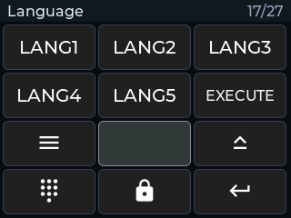
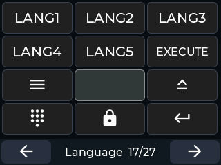


The three lock keys (Caps, Num, Scroll) as big tiles that send the plain key press. The Locks page at the end shows their state instead.
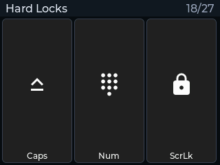
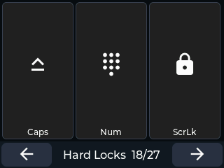


Media control: previous, play/pause, next, volume down, mute, volume up, stop, mail, file browser, and the system power, sleep and wake keys.

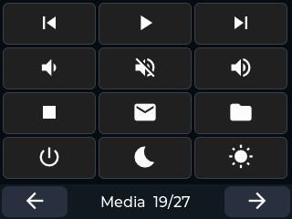
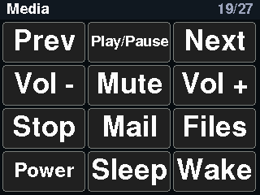

Microsoft Teams: mute, camera and hang up (Ctrl+Shift chords), arrows, Esc, Enter and Backspace.

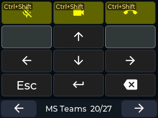
Microsoft Outlook: new mail, reply all and find, arrows, Delete, Enter and Backspace.


PowerPoint: start the slideshow (F5), start from this slide (Shift+F5), Esc, arrows, Page Up/Down, Home and End.


Browser control: reload (F5), hard reload, reopen tab, F7, close tab, arrows, Home, End and full screen.


Debugger keys for an IDE: run/continue (F5), breakpoint (F9), step over (F10), step into (F11), step out (Shift+F11), restart, and the arrows.


Application launchers from the consumer-control page: browser, file manager, mail, calendar, task manager and calculator.

Clipboard and editing: find, undo, cut, copy and paste with captions, plus Esc, Enter and Backspace.


The Locks page: three large tiles for Caps, Num and Scroll Lock. Tapping one sends the key; the tile then shows ON or OFF as reported back by the host, and the LED bar lights a segment for each lock that is on (Caps orange, Num green, Scroll blue). On the Core2 the B button toggles this page; on the CoreS3 tap the title in the bottom bar.


The interface introduced on 12 November 2026: LVGL 9 with a Material icon subset, rounded tiles, captions under icons, modifier badges (Ctrl+Shift, Hyper) and a themed header. It redraws only what changes.
feature/classic-ui)The current firmware with LVGL removed: every feature of both boards is kept (BLE, USB, LED bars, serial protocol, tests), but the screen is drawn straight onto the display with plain tiles, text labels and arrow shapes, in the spirit of the very first version of the project (a Core2-only flat grid, May 2026). Because the CoreS3 has no hardware buttons, it gets a bottom bar for previous, Locks and next.
Both interfaces were built from the same keymap and tested with the same serial test suite, then measured on the boards. A page is "drawn" when it is on the display: LVGL answers LAYER before it renders, so the time is LAYER plus SHOT minus the plain SHOT read-out.
| LVGL | Classic | |
|---|---|---|
| Flash used (CoreS3) | 2.33 MB (35.5 %) | 1.65 MB (25.2 %) |
| RAM used (CoreS3) | 105 kB (32.0 %) | 73 kB (22.4 %) |
| Time to draw a page, CoreS3 | about 360 ms (260 to 480 ms) | about 92 ms |
| Time to draw a page, Core2 | about 450 to 630 ms | about 100 ms |
| Source | 429-line ui.cpp, icon table, 40 kB icon font, LVGL configuration | 378-line ui.cpp, no icon font |
| Look | Icons, anti-aliased text, rounded tiles, pressed-state animation | Text labels, arrow shapes, flat tiles |
| Tests | Both pass the serial test suite on both boards; the classic interface needed no change to the protocol or the tests. | |
The classic interface is clearly faster to switch pages and uses about a third less memory; LVGL looks richer and leaves room for more widgets. The slow part of LVGL is building a page (creating up to 24 buttons and rasterising icon glyphs at run time), which can be improved with pre-rendered bitmap fonts and reusable tile widgets; that work is on the to-do list.
The LED bars are hard to test from software, so the laptop webcam does it. A small JBang tool, tools/LedCam.java, talks to a board over serial and films the result with ffmpeg. Frame differencing uses the Java Vector API; the camera, not the arithmetic, sets the speed.
The CoreS3 has no documented bar pin, so a test sketch (tools/ledtest, environment cores3) drives the first pixel on every M-Bus and Grove pin in turn, showing red, green and blue, while the camera compares each frame with a dark baseline. The first sweep covered 20 candidate pins: GPIO 5 (M-Bus pin 8) scored 65 against a noise floor of 38 to 41 for every other pin, and the frame showed the bar's base glowing. A second sweep with a better score ranked it first as well. The Core2 bar sits on the same M-Bus pin, which fits.
The tool then cycles LAYER 0 to LAYER 25 on each board and films the bar. The contact sheets below put every frame next to a swatch of the colour the firmware was asked to show. All 26 layers come out with the right hue on both boards. Dark colours (Maroon, Navy, DarkGreen, Indigo) are dimmer, as they should be. Pale colours (PaleGreen, Khaki, Lavender, MistyRose) look blue-white because the camera's white balance shifts when the bar is the only light in the room. The numeric check is weak (the glow is only a few brightness levels), so the verdict comes from looking at the sheets.
Not covered yet: the Locks page colours (caps orange, num green, scroll blue, and the additive mix when several are on).
.pio/; see docs/wiki/tooling.md).git clone https://github.com/nicenemo/nachtgespenst.git cd Nachtgespenst pio run -e core2 # about 12 minutes pio run -e core2 -t upload # Core2: resets itself into the bootloader pio run -e cores3 stty -F /dev/ttyACM0 1200 # CoreS3: ROM download mode, then wait 3 s pio run -e cores3 -t nobuild -t upload --upload-port /dev/ttyACM0
Pair the board from the host's Bluetooth settings; it advertises as Nachtgespenst-C2 or Nachtgespenst-S3. Over USB the CoreS3 simply appears as a keyboard.
Layers live in include/Keymap.h as an array of GridLayer (title, bindings, rows, columns, LED colour). Edit, rebuild, flash.
jbang tools/SerialTest.java --board S3 # 29 checks, including USB and BLE routing jbang tools/SerialTest.java --board C2 # 11 checks jbang tools/SerialTest.java --shot shots # screenshots of every page jbang tools/LedCam.java colours --port /dev/ttyUSB0 --out cam --crop x0,y0,x1,y1
cd tools jbang FetchHut.jsh # only when updating to a newer USB HID Usage Tables PDF jbang GenerateHeaders.jsh cp -r include/. ../include/
Full instructions, the sandbox set-up used for Claude Code and the decision records are in the docs folder.
tools/GenerateHeaders.jsh reads the USB HID Usage Tables (as JSON extracted from the official PDF) and renders FreeMarker templates into usage constants and shortcut macros such as kp_A and cp_MUTE. Nothing in include/hid_* is edited by hand.Binding is a HID page, a usage, a modifier mask and a label. Chord helpers (lcs, lmeh, lhyp) wrap macros the way ZMK does.Keymap.h holds the layers; src/ui.cpp draws the current layer, handles touch, mirrors the host LEDs on the bar and dims the backlight after a minute of idleness.HIDManager owns BLE (NimBLE) and, on the CoreS3, USB (TinyUSB). Reports go through a non-blocking press queue with release retry; PREFER and ONLY commands choose which transport receives them.PING, INFO, STATE?, LAYER, TAP, KEY, SHOT, PREFER, ONLY: enough for automated tests and for the screenshots above.The keymap style comes from the owner's ZMK keyboard firmware work, in particular the configuration for the 42-key Corne-ish Zen (franken-cornish-zen: 31 layers, home-row mods, combos, Unicode, APL and Greek layers), and the header generator follows zmk_unicode_headers, which turns the Unicode database into named C macros the way GenerateHeaders.jsh turns the USB HID Usage Tables into kp_A and cp_MUTE.
| ZMK configuration | Nachtgespenst |
|---|---|
| FUN layer: F7 F8 F9 / F4 F5 F6 / F1 F2 F3, F10 on a thumb | The F1-F10 page has the same rows; F11 to F24 follow the same arrangement |
Plain, Hyper (LH) and Meh (LM) function layers | The same three families as pages (... HYP, ... MEH), written with lhyp() and lmeh() |
| KEYPAD, SYM1/SYM2, NAV, VOLUME/CONSUMER, APPL | Numpad Full, Symbol Pad, Edit/Nav, Media, App Launch |
| Home-row mods, combos, mouse, APL, logic, Greek and punctuation layers (Unicode) | Not carried over: a touch macro pad has no typing layer and HID has no Unicode |
| Fixed keycap colours and printed legends | The macro pad draws keycap colour and legend per tile and per page: colour by kind of key and by modifier, icons, captions and modifier badges |
| No application layers | New: Maven, Office, Teams, Outlook, PowerPoint, browser and debugger pages, and the Locks page |
The full comparison is in the wiki.
The project did not start with Claude Code. An earlier version of the firmware was made about a year before, with Gemini in its chat client (the Android app and the browser) and a little help from GitHub Copilot; its keymap style and its header generator come from the owner's ZMK work (see Inspiration). The history of this repository starts on 10 May 2026. On 12 November 2026 the project started working with Claude Code, with a project guide (CLAUDE.md), an overnight plan, and tests that drive the real hardware. The big steps:
SerialTest and the first screenshots.LedCam and the pin finder; documentation and code comments in British English; this page, a changelog, and the classic interface branch.The complete list is in the changelog.